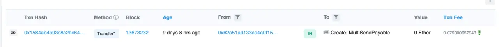

由BT钱包引发的多签钱包思考
author：Thomas_Xu
引言
12月26日，Bitkeep钱包发生漏洞，造成约900w美元的损失。这也引起了我对钱包安全的关注，。此次Bitkeep钱包事件疑似因为部分APK包下载被黑客劫持，安装了黑客植入代码的包，用户下载或者更新的应用或许是被劫持的不明版本（非官方发布版本）。最终可能导致了下载黑客版本的APK用户私钥泄露。截至笔者发文，具体原因还未查明，大家可以持续关注Bitkeep官方twitter或慢雾区了解后续进展。
BitKeep：用户资金被盗疑似因下载了被黑客劫持的APK版本 - PANews (panewslab.com)
可以大概了解到此次事件是一个很典型的传统安全的攻击方式，这些对于硬件钱包来讲，是不可避免的。但是也许，多签钱包可以避免这次攻击的绝大部分损失。
值得一提的是BK钱包已经是三个月来第二次出现漏洞了…
多签钱包
V神曾说过，多签钱包要比硬件钱包更加安全（推文）。

多签钱包，顾名思义，就是需要多个人去签名执行某个操作的包。使用多签钱包进行转账，往往需要 >= 1 个人去签名发送交易之后，转账操作才真正完成。使用多签钱包时，我们可以指定 m/n 的签名模式，就是 n 个人里面有 m 个人签名即可完成操作。可以根据自己的需求设置多签规则，例如：
- 1/2多签模式：两个互相信任的朋友或自己的两个钱包，可以凭各自的私钥独立发起交易（类似于合伙账户）。
- 2/2多签模式：金库中的资金需要2个管理员均同意才能动用这笔资金（需要两个私钥才能转移资金）。
- 2/3多签模式：三个合伙人共同管理资金，为了规避私钥丢失的风险，其中两个私钥签名就可以转移资金。
当然，还有1/3多签、3/6多签、5/8多签不同规则的多签方案，规则是按需的。多签钱包最大的特点是需由多个私钥持有者的授权才能进行钱包交易。
应用场景
多签钱包最常见的应用场景是需求强安全性的个人，以及管理公共资产的投资机构、交易所以及项目方。
资金安全
资金的安全也可以理解为私钥的安全，有一些常见的方案如使用硬件钱包来防止私钥泄露，使用助记词密盒来防止私钥遗忘等等，但依然存在“单点故障”的问题。
在单签钱包中，加密资产的所有权和管理员是在单人手中，一但私钥泄露或遗忘就意味着失去了对钱包的控制权，与之关联的加密资产将完全丢失。而多签钱包的存在，就很大程度上降低了资产损失的风险。以2/3多签模式为例，在全部的3个私钥中，只要有2个私钥完成签名授权就能完成加密资产的转移。
对于个人而言，可以通过一个多签钱包，关联多个钱包地址，分布在多处（类似异地多活、同城多机房），一个放在MetaMask浏览器扩展、一个安装在手机钱包App、一个在冷钱包，需要转移加密资产时只需要用其中的两个钱包共同签名即可。当然为了方便的话，可以使用1/3多签模式，这就类似于把同一个私钥记在三个助记词卡上放在多处一样，但这种方式仅仅是降低了密钥丢失的风险。
资金共管
很多DeFi 协议/DAO 组织/区块链团队其实都有自己的金库，金库里的资产是不能由任何一个人直接动用的，每次动用都要经过多数人的同意或社区投票。这时使用多签钱包来保存金库资产是再合适不过了。
多签操作
在目前这个发展阶段，很多去中心化协议其实都是有个管理员权限的，这个管理员权限往往可以更改协议的某些关键参数。行业普遍做法是把这个管理员权限交给一个多签钱包或时间锁，当需要更改参数时，需要多个人共同签署相关操作。
简单实现
在以太坊上的多签钱包其实是智能合约，属于合约钱包。下面我们写一个极简版多签钱包MultisigWallet合约，它的逻辑非常简单：
设置多签人和门槛（链上）：部署多签合约时，我们需要初始化多签人列表和执行门槛（至少n个多签人签名授权后，交易才能执行）。Gnosis Safe多签钱包支持增加/删除多签人以及改变执行门槛，但在咱们的极简版中不考虑这一功能。
创建交易（链下）：一笔待授权的交易包含以下内容
to：目标合约。value：交易发送的以太坊数量。data：calldata，包含调用函数的选择器和参数。nonce：初始为0，随着多签合约每笔成功执行的交易递增的值，可以防止签名重放攻击。chainid：链id，防止不同链的签名重放攻击。
收集多签签名（链下）：将上一步的交易ABI编码并计算哈希，得到交易哈希，然后让多签人签名，并拼接到一起的到打包签名。
1
2
3
4
5
6
7
8交易哈希: 0xc1b055cf8e78338db21407b425114a2e258b0318879327945b661bfdea570e66
多签人A签名: 0xd6a56c718fc16f283512f90e16f2e62f888780a712d15e884e300c51e5b100de2f014ad71bcb6d97946ef0d31346b3b71eb688831abedaf41b33486b416129031c
多签人B签名: 0x2184f70a17f14426865bda8ebe391508b8e3984d16ce6d90905ae8beae7d75fd435a7e51d837881d820414ebaf0ff16074204c75b33d66928edcf8dd398249861b
打包签名：
0xd6a56c718fc16f283512f90e16f2e62f888780a712d15e884e300c51e5b100de2f014ad71bcb6d97946ef0d31346b3b71eb688831abedaf41b33486b416129031c2184f70a17f14426865bda8ebe391508b8e3984d16ce6d90905ae8beae7d75fd435a7e51d837881d820414ebaf0ff16074204c75b33d66928edcf8dd398249861b
- 调用多签合约的执行函数，验证签名并执行交易（链上）。
事件
MultisigWallet合约有2个事件，ExecutionSuccess和ExecutionFailure，分别在交易成功和失败时释放，参数为交易哈希。
1 | event ExecutionSuccess(bytes32 txHash); // 交易成功事件 |
状态变量
MultisigWallet合约有5个状态变量：
owners：多签持有人数组isOwner：address => bool的映射，记录一个地址是否为多签持有人。ownerCount：多签持有人数量threshold：多签执行门槛，交易至少有n个多签人签名才能被执行。nonce：初始为0，随着多签合约每笔成功执行的交易递增的值，可以防止签名重放攻击。
1 | address[] public owners; // 多签持有人数组 |
函数
MultisigWallet合约有6个函数：
构造函数：调用
_setupOwners()，初始化和多签持有人和执行门槛相关的变量。1
2
3
4
5
6
7// 构造函数，初始化owners, isOwner, ownerCount, threshold
constructor(
address[] memory _owners,
uint256 _threshold
) {
_setupOwners(_owners, _threshold);
}
_setupOwners()：在合约部署时被构造函数调用，初始化owners，isOwner，ownerCount，threshold状态变量。传入的参数中，执行门槛需大于等于1且小于等于多签人数；多签地址不能为0地址且不能重复。1
2
3
4
5
6
7
8
9
10
11
12
13
14
15
16
17
18
19
20
21/// @dev 初始化owners, isOwner, ownerCount,threshold
/// @param _owners: 多签持有人数组
/// @param _threshold: 多签执行门槛，至少有几个多签人签署了交易
function _setupOwners(address[] memory _owners, uint256 _threshold) internal {
// threshold没被初始化过
require(threshold == 0, "WTF5000");
// 多签执行门槛 小于 多签人数
require(_threshold <= _owners.length, "WTF5001");
// 多签执行门槛至少为1
require(_threshold >= 1, "WTF5002");
for (uint256 i = 0; i < _owners.length; i++) {
address owner = _owners[i];
// 多签人不能为0地址，本合约地址，不能重复
require(owner != address(0) && owner != address(this) && !isOwner[owner], "WTF5003");
owners.push(owner);
isOwner[owner] = true;
}
ownerCount = _owners.length;
threshold = _threshold;
}
execTransaction()：在收集足够的多签签名后，验证签名并执行交易。传入的参数为目标地址to，发送的以太坊数额value，数据data，以及打包签名signatures。打包签名就是将收集的多签人对交易哈希的签名，按多签持有人地址从小到大顺序，打包到一个[bytes]数据中。这一步调用了encodeTransactionData()编码交易，调用了checkSignatures()检验签名是否有效、数量是否达到执行门槛。1
2
3
4
5
6
7
8
9
10
11
12
13
14
15
16
17
18
19
20
21/// @dev 在收集足够的多签签名后，执行交易
/// @param to 目标合约地址
/// @param value msg.value，支付的以太坊
/// @param data calldata
/// @param signatures 打包的签名，对应的多签地址由小到达，方便检查。 ({bytes32 r}{bytes32 s}{uint8 v}) (第一个多签的签名, 第二个多签的签名 ... )
function execTransaction(
address to,
uint256 value,
bytes memory data,
bytes memory signatures
) public payable virtual returns (bool success) {
// 编码交易数据，计算哈希
bytes32 txHash = encodeTransactionData(to, value, data, nonce, block.chainid);
nonce++; // 增加nonce
checkSignatures(txHash, signatures); // 检查签名
// 利用call执行交易，并获取交易结果
(success, ) = to.call{value: value}(data);
require(success , "WTF5004");
if (success) emit ExecutionSuccess(txHash);
else emit ExecutionFailure(txHash);
}
checkSignatures()：检查签名和交易数据的哈希是否对应，数量是否达到门槛，若否，交易会revert。单个签名长度为65字节，因此打包签名的长度要长于threshold * 65。调用了signatureSplit()分离出单个签名。这个函数的大致思路：- 用ecdsa获取签名地址.
- 利用
currentOwner > lastOwner确定签名来自不同多签（多签地址递增）。 - 利用
isOwner[currentOwner]确定签名者为多签持有人。
1
2
3
4
5
6
7
8
9
10
11
12
13
14
15
16
17
18
19
20
21
22
23
24
25
26
27
28
29
30
31
32
33
34
35/**
* @dev 检查签名和交易数据是否对应。如果是无效签名，交易会revert
* @param dataHash 交易数据哈希
* @param signatures 几个多签签名打包在一起
*/
function checkSignatures(
bytes32 dataHash,
bytes memory signatures
) public view {
// 读取多签执行门槛
uint256 _threshold = threshold;
require(_threshold > 0, "WTF5005");
// 检查签名长度足够长
require(signatures.length >= _threshold * 65, "WTF5006");
// 通过一个循环，检查收集的签名是否有效
// 大概思路：
// 1. 用ecdsa先验证签名是否有效
// 2. 利用 currentOwner > lastOwner 确定签名来自不同多签（多签地址递增）
// 3. 利用 isOwner[currentOwner] 确定签名者为多签持有人
address lastOwner = address(0);
address currentOwner;
uint8 v;
bytes32 r;
bytes32 s;
uint256 i;
for (i = 0; i < _threshold; i++) {
(v, r, s) = signatureSplit(signatures, i);
// 利用ecrecover检查签名是否有效
currentOwner = ecrecover(keccak256(abi.encodePacked("\x19Ethereum Signed Message:\n32", dataHash)), v, r, s);
require(currentOwner > lastOwner && isOwner[currentOwner], "WTF5007");
lastOwner = currentOwner;
}
}
signatureSplit()：将单个签名从打包的签名分离出来，参数分别为打包签名signatures和要读取的签名位置pos。利用了内联汇编，将签名的r，s，和v三个值分离出来。1
2
3
4
5
6
7
8
9
10
11
12
13
14
15
16
17
18
19
20/// 将单个签名从打包的签名分离出来
/// @param signatures 打包签名
/// @param pos 要读取的多签index.
function signatureSplit(bytes memory signatures, uint256 pos)
internal
pure
returns (
uint8 v,
bytes32 r,
bytes32 s
)
{
// 签名的格式：{bytes32 r}{bytes32 s}{uint8 v}
assembly {
let signaturePos := mul(0x41, pos)
r := mload(add(signatures, add(signaturePos, 0x20)))
s := mload(add(signatures, add(signaturePos, 0x40)))
v := and(mload(add(signatures, add(signaturePos, 0x41))), 0xff)
}
}
encodeTransactionData()：将交易数据打包并计算哈希，利用了abi.encode()和keccak256()函数。这个函数可以计算出一个交易的哈希，然后在链下让多签人签名并收集，再调用execTransaction()函数执行。1
2
3
4
5
6
7
8
9
10
11
12
13
14
15
16
17
18
19
20
21
22
23
24
25
26/// @dev 编码交易数据
/// @param to 目标合约地址
/// @param value msg.value，支付的以太坊
/// @param data calldata
/// @param _nonce 交易的nonce.
/// @param chainid 链id
/// @return 交易哈希bytes.
function encodeTransactionData(
address to,
uint256 value,
bytes memory data,
uint256 _nonce,
uint256 chainid
) public pure returns (bytes32) {
bytes32 safeTxHash =
keccak256(
abi.encode(
to,
value,
keccak256(data),
_nonce,
chainid
)
);
return safeTxHash;
}
操作流程
- 部署多签合约，
2个多签地址，交易执行门槛设为2。因为演示的必要，这里直接存入1 ether
1 | 多签地址1: 0x5B38Da6a701c568545dCfcB03FcB875f56beddC4 |
- 调用
encodeTransactionData()，编码并计算向多签地址1转账1 ETH的交易哈希。
1 | 参数 |
- 利用Remix中ACCOUNT旁边的笔记图案的按钮进行签名，内容输入上面的交易哈希，获得签名，两个钱包都要签。
1 | 多签地址1的签名: 0x014db45aa753fefeca3f99c2cb38435977ebb954f779c2b6af6f6365ba4188df542031ace9bdc53c655ad2d4794667ec2495196da94204c56b1293d0fbfacbb11c |
- 调用
execTransaction()函数执行交易，将第3步中的交易参数和打包签名作为参数传入。可以看到交易执行成功，ETH被转出多签。
到此为止，我们走完了整个从签名到交易的流程，大家应该已经对多签钱包的机制有了一定的了解。
多签钱包相关安全事件
现目前多签钱包的应用有很多，最出名的应该是：
Gnosis Safe https://gnosis-safe.io/
Ownbit https://ownbit.pro/
其中我分析一个发生在Gnosis Safe上的一次钓鱼攻击，这个攻击方式比较综合，同时也可以帮我们更好的理解多签。
相关信息均来自于慢雾
相关信息
攻击者地址 1：
0x62a51ad133ca4a0f1591db5ae8c04851a9a4bf65
攻击者地址 2：
0x26a76f4fe7a21160274d060acb209f515f35429c
恶意逻辑实现合约 ETH 地址：
0x09afae029d38b76a330a1bdee84f6e03a4979359
恶意合约 ETH 地址 MultiSendCallOnly 合约：
0x3cb0652856d7eabe51f1e3cceda99c93b05d7cea
受攻击的代理合约地址：
0xc97f82c80df57c34e84491c0eda050ba924d7429
逻辑合约地址：
0x34cfac646f301356faa8b21e94227e3583fe3f5f
MultiSendCall 合约 ETH 地址：
0x40a2accbd92bca938b02010e17a5b8929b49130d
攻击交易：
https://etherscan.io/tx/0x71c2d6d96a3fae4be39d9e571a2678d909b83ca97249140ce7027092aa77c74e
攻击步骤
第一步：攻击者先是在 9 天前部署了恶意 MultiSendCall，并且验证了合约代码让这个攻击合约看起来像之前真正的 MultiSendCall。

第二步：攻击者通过钓⻥⼿段构造了⼀个指向恶意地址 calldata 数据让⽤户进⾏签名。calldata ⾥⾯正确的 to 地址应该是 0x40a2accbd92bca938b02010e17a5b8929b49130d，现在被更改成了恶意合约 ETH 地址 MultiSendCallOnly 合约 0x3cb0652856d7eabe51f1e3cceda99c93b05d7cea。
由于攻击者获取的签名数据是正确的，所以通过了验证多签的阶段，之后就开始执⾏了攻击合约的 multiSend 函数。
这时候通过查看攻击合约我们发现此处的修饰器 Payable 有赋值的情况存在。这时候我们通过对源码的反编译发现：

当 payment.version < VERSION 这个条件触发的时候每次调⽤的时候都会对 storage[0x00] 进⾏重新赋值。这个 storage[0x00] 是不是特别眼熟？没错我们来看下 Proxy 合约。
当这笔交易执⾏完毕时 Proxy 的 storage[0x00] 已经变成0x020014b037686d9ab0e7379809afae029d38b76a330a1bdee84f6e03a4979359 。
由于 Proxy 合约执⾏的逻辑合约地址 masterCopy 是从 storage[0x00] 读取的，所以 Proxy 指向的逻辑合约会被攻击者更改为攻击合约。后续攻击者只需等待⽤户把⾜够的代币放⼊此合约，之后构造转账函数把钱取⾛即可。
攻击者为了避免被发现，在攻击合约中的逻辑中还实现了保证⽤户依然能正常使⽤相关的功能。
反编译攻击者的逻辑合约发现，在攻击合约的逻辑保证了攻击者动⼿前⽤户都可以正常使⽤多签功能。只有当攻击者⾃⼰调⽤的时候才会绕过验证直接把⽤户的钱取⾛。
总结
本次攻击先是使⽤了钓⻥⼿段获取了⽤户的⼀次完整的多签数据，在利⽤了 delegatecall 调⽤外部合约的时候，如果外部合约有对数据进⾏更改的操作的话，会使⽤外部合约中变量存储所在对应的 slot 位置指向来影响当前合约同⼀个 slot 的数据。通过攻击合约把代理合约指向的逻辑指向⾃⼰的攻击合约。这样就可以随时绕过多签把合约的钱随时转⾛。
经过分析本次的事件，⼤概率是⿊客团队针对 Gnosis Safe Multi-sig 应⽤的⽤户进⾏的钓⻥攻击， 0x34cfac64 这个正常的逻辑合约是 Gnosis Safe 官⽅的地址，攻击者将这个地址硬编码在恶意合约中，所以这⼀系列的操作是适⽤于攻击所有 Gnosis Safe Multi-sig 应⽤的⽤户。此次攻击可能还有其他受害者。

true

...
...
This is copyright.